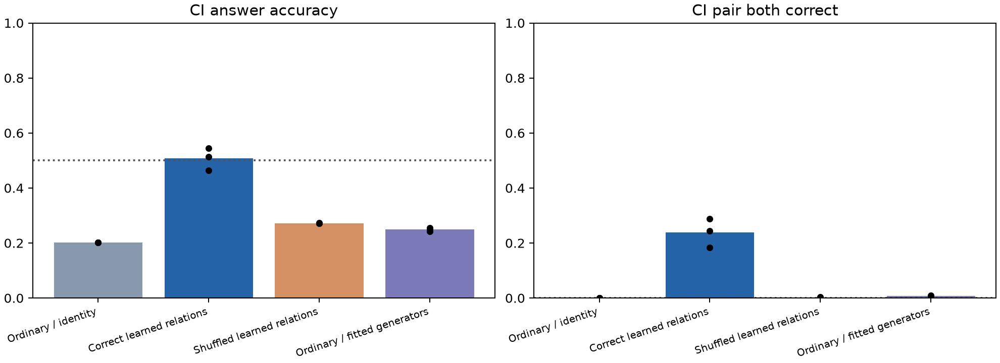

答案＋任务提示基线能近乎精确重现旧四方向记录组的代数几何。新实验中，正确关系监督的组合预测明显优于错误配对和普通训练的事后探针，但稳定超过已知答案的50%上限尚未确认。预设的4/4项均值门槛成立，这些门槛是描述性比较，不能当作显著性检验或三种子全部超过上限。
CI与ICI预测同一个缺失的RL-max统计，不能把它们算作两个独立重复。先在每个种子内取两者平均，再跨种子平均，准确率为50.69%。三个种子分别为54.59%、46.35%、51.13%；其中一个低于50%。仅基于这三个源初始化的探索性95% t区间为40.42%–60.97%，跨越50%。该区间依赖正态均值假设，并条件于相同训练世界和测试集；不覆盖新世界的不确定性。
三种子中正确关系监督都优于错误配对和普通模型事后探针，且每对同时答对的比例为正，支持可组合访问超出三个已知标量答案的信息。但平均高于50%约0.7个百分点，不能据此声称稳定突破答案上限。移除加性线性答案编码也不能排除全部非线性答案信息。
这是显式已知关系监督与框架提供的组合规则下的局部结果。普通任务训练后事后拟合生成元的隐藏答案准确率约25%，当前没有支持其自行发现隐藏关系。补充统计与解释口径；原始预设门槛、汇总和核验保持原样。
基线只访问真实任务答案和任务身份，没有排列输入或神经训练。每个答案类别映射到固定随机向量，再加任务提示向量；使用与旧实验相同的轨道、生成元拟合和复合评估。这是特权答案对照，用来检验解释是否充分，不是可部署的隐藏答案预测器。
| 旧任务组 | 基线/残差 | 生成元误差 | 复合误差 | 线性答案重建隐藏误差 |
|---|---|---|---|---|
| novel_records | answer_plus_prompt | 0.0000 | 0.0000 | None |
| novel_records | linear_answer_residual | 0.4140 | 0.4766 | 0.1726 |
| novel_minima_pair | answer_plus_prompt | 0.2745 | 0.4699 | None |
| novel_minima_pair | linear_answer_residual | 0.4911 | 0.5535 | 0.1515 |
| novel_peak_mixed | answer_plus_prompt | 0.3061 | 0.4047 | None |
| novel_peak_mixed | linear_answer_residual | 0.4840 | 0.5276 | 0.1341 |
答案基线也重现了四记录优于两个非闭合任务集合的排序。旧几何不能单独识别额外计算机制。去掉线性加性答案预测后，残余复合误差上升；这仍未排除非线性答案编码。
LR-max是从左向右扫描出现新最大值的次数；C为值补操作，将排列元素v替换为n+1−v；I为排列取逆。CI表示先C后I，ICI表示先I、再C、再I。所有输入与标签留出按完整八状态轨道核验。
九个全新模型：普通任务训练、正确关系训练、错误配对关系训练 ×三个源种子。每模型 20,000 步，192 万个相同源标签曝光。只监督 LR-max 在原状态、C 状态、I 状态的答案，对应原排列的 LR-max、LR-min、RL-min。源训练的完整八状态轨道只开放三个状态，其余五个状态和对应边均排除；验证也只看三个已知状态。
关系条件另监督四条有向对应：e↔C 与 e↔I，不添加新源答案。两个仿射算子分别学习，不施加群恒等式。隐藏 CI 由 hA_C A_I（含偏置）预测，ICI 同样由生成元复合；然后使用固定数字读出。复合方式由实验框架提供，算子是否预测真实隐藏状态与答案由留出检验决定。
测试包含 168 个未筛选的新轨道，以及 1,344 对碰撞排列。每对长度及三个已知答案完全相同，隐藏 CI 与 ICI 答案不同。因此只用已知答案、任务与长度的确定性预测器准确率至多 50%，两项同时正确率为 0。CI/ICI 都对应缺失的 RL-max 答案，但它们的变换输入和隐藏向量仍不同。

| 训练条件 | 隐藏词 | 可见源准确率 | 组合答案准确率 | 一对全部正确 | 直接输入复合排列诊断 | 真实隐藏位移误差 |
|---|---|---|---|---|---|---|
| ordinary | ci | 1.0000 | 0.2024 | 0.0000 | 0.9993 | 1.0000 |
| ordinary | ici | 1.0000 | 0.2024 | 0.0000 | 0.9985 | 1.0000 |
| correct_relations | ci | 0.9960 | 0.5071 | 0.2386 | 0.9960 | 0.2295 |
| correct_relations | ici | 0.9960 | 0.5068 | 0.2351 | 0.9958 | 0.2368 |
| shuffled_relations | ci | 0.9934 | 0.2717 | 0.0012 | 0.9952 | 0.5331 |
| shuffled_relations | ici | 0.9934 | 0.2712 | 0.0012 | 0.9958 | 0.5367 |
正确关系条件逐源种子：
| 源种子 | 隐藏词 | 组合准确率 | 一对全部正确 | 隐藏位移误差 |
|---|---|---|---|---|
| 7103 | ci | 0.5134 | 0.2440 | 0.1939 |
| 7103 | ici | 0.5093 | 0.2426 | 0.1998 |
| 6091 | ci | 0.4635 | 0.1838 | 0.2914 |
| 6091 | ici | 0.4635 | 0.1801 | 0.2989 |
| 5081 | ci | 0.5443 | 0.2879 | 0.2033 |
| 5081 | ici | 0.5476 | 0.2827 | 0.2117 |
预先保存的检验：
| 检验 | 支持 |
|---|---|
| both_native_hidden_words_above_answer_ceiling | True |
| native_CI_positive_pair_both_correct | True |
| native_correct_beats_shuffled_and_ordinary_identity | True |
| stronger_gate_correct_beats_ordinary_posthoc | True |
事后探针只从 336 个拟合轨道及 84 个验证轨道的已知三状态拟合 e↔C、e↔I；均值和参数选择也不访问隐藏状态。它与源训练中学得的算子单列。直接输入诊断会访问复合排列，用于检查模型直接处理新排列时的任务能力；它不是严格的数值上界，也不能代替组合推断。
| 训练条件 | 算子来源 | 测试 | 词 | 答案准确率 | 一对全对 | 隐藏位移误差 |
|---|---|---|---|---|---|---|
| ordinary | native_operators | iid | c | 0.1667 | None | 1.0000 |
| ordinary | native_operators | iid | i | 0.2440 | None | 1.0000 |
| ordinary | native_operators | iid | ci | 0.1488 | None | 1.0000 |
| ordinary | native_operators | iid | ici | 0.1488 | None | 1.0000 |
| ordinary | native_operators | answer_collisions | c | 0.2128 | 0.2128 | 1.0000 |
| ordinary | native_operators | answer_collisions | i | 0.2314 | 0.2314 | 1.0000 |
| ordinary | native_operators | answer_collisions | ci | 0.2024 | 0.0000 | 1.0000 |
| ordinary | native_operators | answer_collisions | ici | 0.2024 | 0.0000 | 1.0000 |
| ordinary | posthoc_correct_generators | iid | c | 0.3234 | None | 0.4691 |
| ordinary | posthoc_correct_generators | iid | i | 0.2599 | None | 0.5536 |
| ordinary | posthoc_correct_generators | iid | ci | 0.2778 | None | 0.4865 |
| ordinary | posthoc_correct_generators | iid | ici | 0.2718 | None | 0.4834 |
| ordinary | posthoc_correct_generators | answer_collisions | c | 0.3552 | 0.2445 | 0.4836 |
| ordinary | posthoc_correct_generators | answer_collisions | i | 0.2933 | 0.2463 | 0.5155 |
| ordinary | posthoc_correct_generators | answer_collisions | ci | 0.2494 | 0.0067 | 0.5126 |
| ordinary | posthoc_correct_generators | answer_collisions | ici | 0.2491 | 0.0037 | 0.5080 |
| ordinary | posthoc_shuffled_generators | iid | c | 0.2480 | None | 0.5003 |
| ordinary | posthoc_shuffled_generators | iid | i | 0.2599 | None | 0.5592 |
| ordinary | posthoc_shuffled_generators | iid | ci | 0.2857 | None | 0.4893 |
| ordinary | posthoc_shuffled_generators | iid | ici | 0.2877 | None | 0.4851 |
| ordinary | posthoc_shuffled_generators | answer_collisions | c | 0.2974 | 0.2522 | 0.5060 |
| ordinary | posthoc_shuffled_generators | answer_collisions | i | 0.2927 | 0.2431 | 0.5158 |
| ordinary | posthoc_shuffled_generators | answer_collisions | ci | 0.2510 | 0.0067 | 0.5142 |
| ordinary | posthoc_shuffled_generators | answer_collisions | ici | 0.2515 | 0.0037 | 0.5097 |
| ordinary | identity | iid | c | 0.1667 | None | 1.0000 |
| ordinary | identity | iid | i | 0.2440 | None | 1.0000 |
| ordinary | identity | iid | ci | 0.1488 | None | 1.0000 |
| ordinary | identity | iid | ici | 0.1488 | None | 1.0000 |
| ordinary | identity | answer_collisions | c | 0.2128 | 0.2128 | 1.0000 |
| ordinary | identity | answer_collisions | i | 0.2314 | 0.2314 | 1.0000 |
| ordinary | identity | answer_collisions | ci | 0.2024 | 0.0000 | 1.0000 |
| ordinary | identity | answer_collisions | ici | 0.2024 | 0.0000 | 1.0000 |
| correct_relations | native_operators | iid | c | 0.9921 | None | 0.0102 |
| correct_relations | native_operators | iid | i | 0.8651 | None | 0.0573 |
| correct_relations | native_operators | iid | ci | 0.5198 | None | 0.2116 |
| correct_relations | native_operators | iid | ici | 0.5079 | None | 0.2181 |
| correct_relations | native_operators | answer_collisions | c | 0.9834 | 0.9710 | 0.0142 |
| correct_relations | native_operators | answer_collisions | i | 0.9051 | 0.8316 | 0.0458 |
| correct_relations | native_operators | answer_collisions | ci | 0.5071 | 0.2386 | 0.2295 |
| correct_relations | native_operators | answer_collisions | ici | 0.5068 | 0.2351 | 0.2368 |
| correct_relations | posthoc_correct_generators | iid | c | 0.9940 | None | 0.0158 |
| correct_relations | posthoc_correct_generators | iid | i | 0.8651 | None | 0.0639 |
| correct_relations | posthoc_correct_generators | iid | ci | 0.4742 | None | 0.2304 |
| correct_relations | posthoc_correct_generators | iid | ici | 0.4841 | None | 0.2327 |
| correct_relations | posthoc_correct_generators | answer_collisions | c | 0.9835 | 0.9717 | 0.0203 |
| correct_relations | posthoc_correct_generators | answer_collisions | i | 0.9039 | 0.8309 | 0.0541 |
| correct_relations | posthoc_correct_generators | answer_collisions | ci | 0.4640 | 0.1882 | 0.2438 |
| correct_relations | posthoc_correct_generators | answer_collisions | ici | 0.4665 | 0.1915 | 0.2496 |
| correct_relations | posthoc_shuffled_generators | iid | c | 0.2262 | None | 0.5756 |
| correct_relations | posthoc_shuffled_generators | iid | i | 0.2480 | None | 0.6957 |
| correct_relations | posthoc_shuffled_generators | iid | ci | 0.2817 | None | 0.5141 |
| correct_relations | posthoc_shuffled_generators | iid | ici | 0.2817 | None | 0.5156 |
| correct_relations | posthoc_shuffled_generators | answer_collisions | c | 0.2961 | 0.2731 | 0.5043 |
| correct_relations | posthoc_shuffled_generators | answer_collisions | i | 0.2770 | 0.2564 | 0.6002 |
| correct_relations | posthoc_shuffled_generators | answer_collisions | ci | 0.2617 | 0.0037 | 0.5285 |
| correct_relations | posthoc_shuffled_generators | answer_collisions | ici | 0.2633 | 0.0030 | 0.5307 |
| correct_relations | identity | iid | c | 0.1667 | None | 1.0000 |
| correct_relations | identity | iid | i | 0.2440 | None | 1.0000 |
| correct_relations | identity | iid | ci | 0.1488 | None | 1.0000 |
| correct_relations | identity | iid | ici | 0.1488 | None | 1.0000 |
| correct_relations | identity | answer_collisions | c | 0.2123 | 0.2118 | 1.0000 |
| correct_relations | identity | answer_collisions | i | 0.2310 | 0.2307 | 1.0000 |
| correct_relations | identity | answer_collisions | ci | 0.2028 | 0.0002 | 1.0000 |
| correct_relations | identity | answer_collisions | ici | 0.2028 | 0.0002 | 1.0000 |
| shuffled_relations | native_operators | iid | c | 0.2659 | None | 0.4109 |
| shuffled_relations | native_operators | iid | i | 0.2341 | None | 0.4990 |
| shuffled_relations | native_operators | iid | ci | 0.2401 | None | 0.4687 |
| shuffled_relations | native_operators | iid | ici | 0.2440 | None | 0.4708 |
| shuffled_relations | native_operators | answer_collisions | c | 0.3192 | 0.3125 | 0.4854 |
| shuffled_relations | native_operators | answer_collisions | i | 0.3383 | 0.3326 | 0.4916 |
| shuffled_relations | native_operators | answer_collisions | ci | 0.2717 | 0.0012 | 0.5331 |
| shuffled_relations | native_operators | answer_collisions | ici | 0.2712 | 0.0012 | 0.5367 |
| shuffled_relations | posthoc_correct_generators | iid | c | 0.2560 | None | 0.4271 |
| shuffled_relations | posthoc_correct_generators | iid | i | 0.2837 | None | 0.5124 |
| shuffled_relations | posthoc_correct_generators | iid | ci | 0.2698 | None | 0.4743 |
| shuffled_relations | posthoc_correct_generators | iid | ici | 0.2718 | None | 0.4776 |
| shuffled_relations | posthoc_correct_generators | answer_collisions | c | 0.2977 | 0.2502 | 0.4946 |
| shuffled_relations | posthoc_correct_generators | answer_collisions | i | 0.3001 | 0.2646 | 0.5102 |
| shuffled_relations | posthoc_correct_generators | answer_collisions | ci | 0.2599 | 0.0102 | 0.5410 |
| shuffled_relations | posthoc_correct_generators | answer_collisions | ici | 0.2572 | 0.0047 | 0.5439 |
| shuffled_relations | posthoc_shuffled_generators | iid | c | 0.2282 | None | 0.4362 |
| shuffled_relations | posthoc_shuffled_generators | iid | i | 0.3016 | None | 0.5136 |
| shuffled_relations | posthoc_shuffled_generators | iid | ci | 0.2758 | None | 0.4748 |
| shuffled_relations | posthoc_shuffled_generators | iid | ici | 0.2639 | None | 0.4757 |
| shuffled_relations | posthoc_shuffled_generators | answer_collisions | c | 0.2965 | 0.2827 | 0.4975 |
| shuffled_relations | posthoc_shuffled_generators | answer_collisions | i | 0.3018 | 0.2822 | 0.5082 |
| shuffled_relations | posthoc_shuffled_generators | answer_collisions | ci | 0.2553 | 0.0055 | 0.5409 |
| shuffled_relations | posthoc_shuffled_generators | answer_collisions | ici | 0.2551 | 0.0035 | 0.5434 |
| shuffled_relations | identity | iid | c | 0.1667 | None | 1.0000 |
| shuffled_relations | identity | iid | i | 0.2460 | None | 1.0000 |
| shuffled_relations | identity | iid | ci | 0.1488 | None | 1.0000 |
| shuffled_relations | identity | iid | ici | 0.1488 | None | 1.0000 |
| shuffled_relations | identity | answer_collisions | c | 0.2127 | 0.2121 | 1.0000 |
| shuffled_relations | identity | answer_collisions | i | 0.2314 | 0.2307 | 1.0000 |
| shuffled_relations | identity | answer_collisions | ci | 0.2023 | 0.0000 | 1.0000 |
| shuffled_relations | identity | answer_collisions | ici | 0.2023 | 0.0000 | 1.0000 |